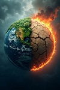
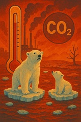
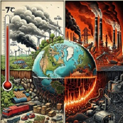
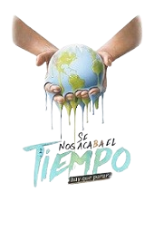
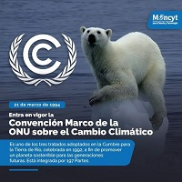

Ultimas noticias

Un poco de claridad
Talar y quemar bosques:Reduce la cantidad de arboles que absorven CO2 y aumenta la contaminacion
Ganaderia y agricultura intensiva:Generan metano y oxido nitroso, gases que contribuyen al calentamiento global.
Actividad industrial:Las fabricas emiten gases contaminantes al descomponerse en los basureros.

Las temperaturas promedio del planeta continúan aumentando debido a la acumulación de gases de efecto invernadero, principalmente por actividades humanas como la quema de combustibles fósiles y la deforestación. Este incremento provoca olas de calor más intensas, sequías prolongadas y cambios en los patrones del clima.Especialistas señalan que reducir las emisiones de dióxido de carbono y fomentar el uso de energías renovables son medidas fundamentales para disminuir el impacto del calentamiento global.
La participación de la sociedad es esencial para enfrentar este problema ambiental. Gobiernos, empresas y ciudadanos deben trabajar en conjunto para impulsar políticas de protección ambiental, reducir la contaminación y fomentar el uso de tecnologías limpias. La educación ambiental también desempeña un papel importante, ya que ayuda a crear conciencia sobre la importancia de cuidar los recursos naturales y adoptar hábitos que contribuyan a disminuir los efectos del cambio climático.

Los océanos absorben gran parte del calor generado por el cambio climático, pero también reciben millones de toneladas de residuos plásticos cada año. Esta contaminación afecta a miles de especies marinas y altera los ecosistemas.Diversas organizaciones impulsan campañas de limpieza de playas, reciclaje y reducción del uso de plásticos de un solo uso para proteger la biodiversidad marina y conservar los recursos naturales.
Especialistas en medio ambiente advierten que la contaminación de los océanos continúa siendo una de las mayores amenazas para la biodiversidad marina. Cada año, millones de toneladas de plásticos llegan al mar, poniendo en riesgo la supervivencia de peces, tortugas, aves y mamíferos marinos. Ante esta situación, gobiernos, organizaciones ambientales y ciudadanos impulsan campañas de limpieza y promueven la reducción del uso de plásticos desechables, con el objetivo de preservar los ecosistemas marinos y garantizar la conservación de los recursos naturales.

La reforestación se ha convertido en una de las estrategias más importantes para reducir los efectos del cambio climático. Los árboles capturan dióxido de carbono, producen oxígeno y ayudan a regular la temperatura del ambiente.En distintos países se desarrollan programas de plantación de árboles con la participación de escuelas, comunidades y organizaciones ambientales. Además de mejorar la calidad del aire, estas acciones favorecen la conservación de la fauna y la recuperación de los suelos.
Especialistas destacan que la reforestación también contribuye a proteger las fuentes de agua, disminuir la erosión del suelo y crear espacios verdes que benefician a las comunidades. Sin embargo, señalan que para obtener resultados duraderos es necesario dar mantenimiento a los árboles plantados y promover la participación constante de la sociedad en el cuidado del medio ambiente.

La campaña global de este año se desarrolla bajo el llamado #PorElClimaYa, con el objetivo de acelerar la acción climática y promover cambios en los sistemas económicos, energéticos y de consumo que contribuyen al calentamiento global.Las Naciones Unidas señalan que el cambio climático ya no representa una amenaza futura, sino una realidad que está modificando las condiciones de vida en todo el mundo.El organismo internacional destaca que cada décima de grado de aumento en la temperatura global tiene consecuencias directas sobre los ecosistemas, la disponibilidad de agua, la producción de alimentos y la salud de millones de personas.
En distintos países también se han reforzado las políticas para reducir las emisiones contaminantes mediante el impulso de energías renovables y la protección de los recursos naturales. Expertos señalan que la cooperación entre gobiernos, empresas y ciudadanos será clave para cumplir los compromisos internacionales y limitar el avance del cambio climático, cuyos efectos ya se reflejan en fenómenos meteorológicos cada vez más intensos y frecuentes.